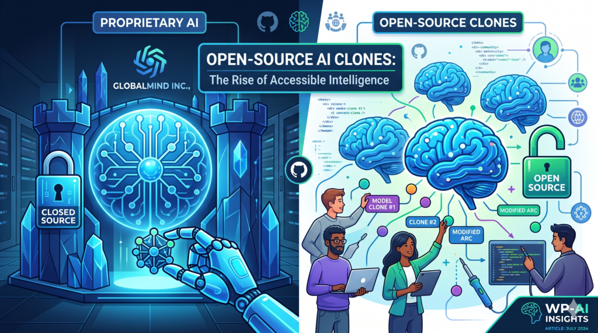

Apertura gradual
Más empresas liberan partes de su software, publican especificaciones y compiten en servicio, datos y comunidad en vez de en secreto del código.
Prospectiva
Si un agente puede estudiar tu producto y reconstruir sus funciones en días, ¿qué te queda como ventaja? Esta página explora escenarios, respuestas posibles y una forma de medir tu propio «foso».
Hasta ahora, replicar un software complejo exigía equipos grandes, años de trabajo y mucho dinero. Esa dificultad era una protección en sí misma. Los agentes de código atacan justo ahí: trabajan en bucles, verifican contra una referencia y no se cansan.
Para la IA, esto significa pasar de «asistente que sugiere» a sistema que investiga, construye y comprueba. Para la industria, la comparación más repetida es la de los años 90, cuando el intercambio de archivos MP3 obligó a repensar cómo se vendía la música.
Y hay otra consecuencia: si cada persona puede pedir una versión a su medida de una herramienta, el valor se desplaza del «programa universal» hacia el software hecho a la medida de cada quien.

Escenarios
Más empresas liberan partes de su software, publican especificaciones y compiten en servicio, datos y comunidad en vez de en secreto del código.
Términos de uso más estrictos, cláusulas contra la ingeniería inversa, más patentes, ofuscación y movimiento de la lógica hacia servidores propios.
Cada usuario genera su propia versión de una herramienta, ajustada a su flujo de trabajo, y el producto «de caja» pierde peso.
Lo más probable es una mezcla: la ley y los tribunales marcarán límites mientras la tecnología sigue avanzando.
Open-source
Las licencias de código abierto se sostienen sobre el derecho de autor. Si cualquiera puede reescribir un proyecto con un agente y publicarlo con otra licencia, el mecanismo que protegía a los mantenedores se tensiona.